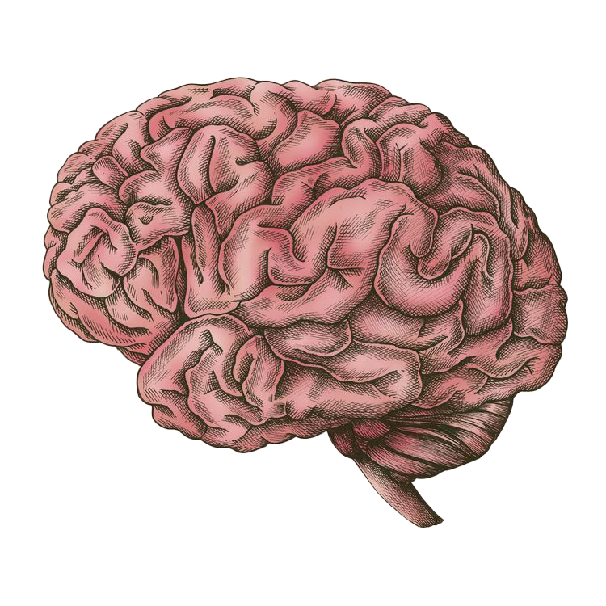

For week 10, I've been hospitalized and detained from updating the entries.
Although it was an unfortunate experience, I did learned something worth noting
in my project.
Staying in the hospital was boring. All electronics of mine were forfeited, which
made me completely separate from the internet. To entertain myself during this period,
I chit-chatted with the patients and nurses several times.
One thing I remebered the most, was the reason that the patients are hospitalized.
The patients in the hospital came from different background and age group, but surprisingly,
I found that most of them worker who ranged from 20 to 30 years old.
This situation was explained while I was chatting with a nurse. The nurse told me that
most patients was hospitalized because of overworking.

Click

It pointed out an important element for a good time management - taking appropriate break.